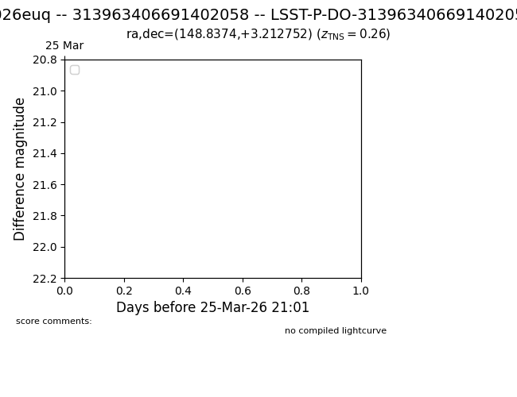
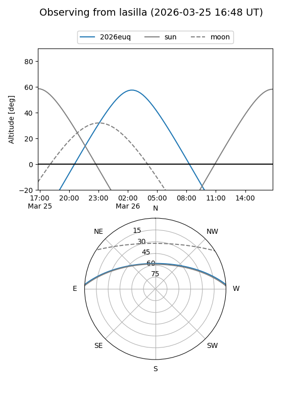
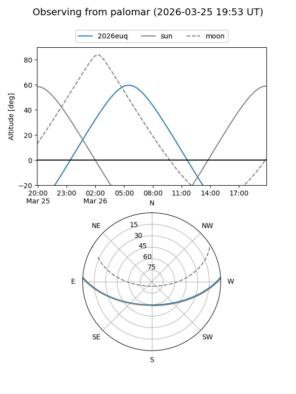
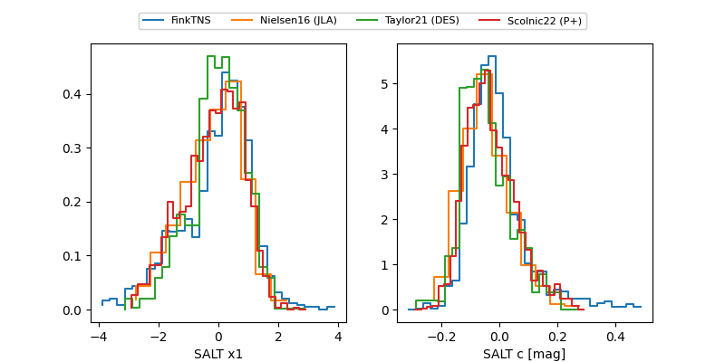

2026euq
Target 2026euq at 2026-03-25 21:03
Aliases and brokers:
TNS: link
YSE: link
alt names
LSST-P-DO-313963406691402058 (lsst)
313963406691402058 (fink_lsst)
2026euq (tns,yse)
Coordinates:
equatorial (ra, dec) = 148.8374,+3.21275
equatorial (HMS+DMS) = 09:55:20.98,+03:12:45.91
galactic (l, b) = (234.7301,+41.64512)
Flags:
Photometry:
no photometry available
Lightcurve

Visibility


Additional plots
